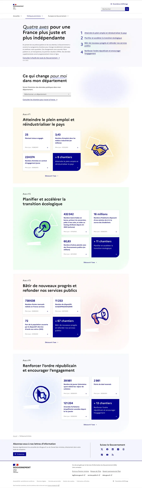
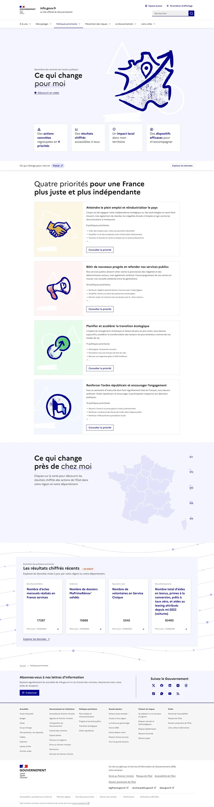
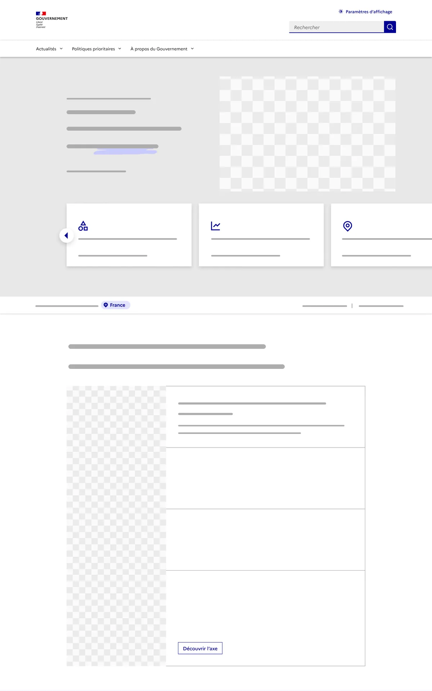
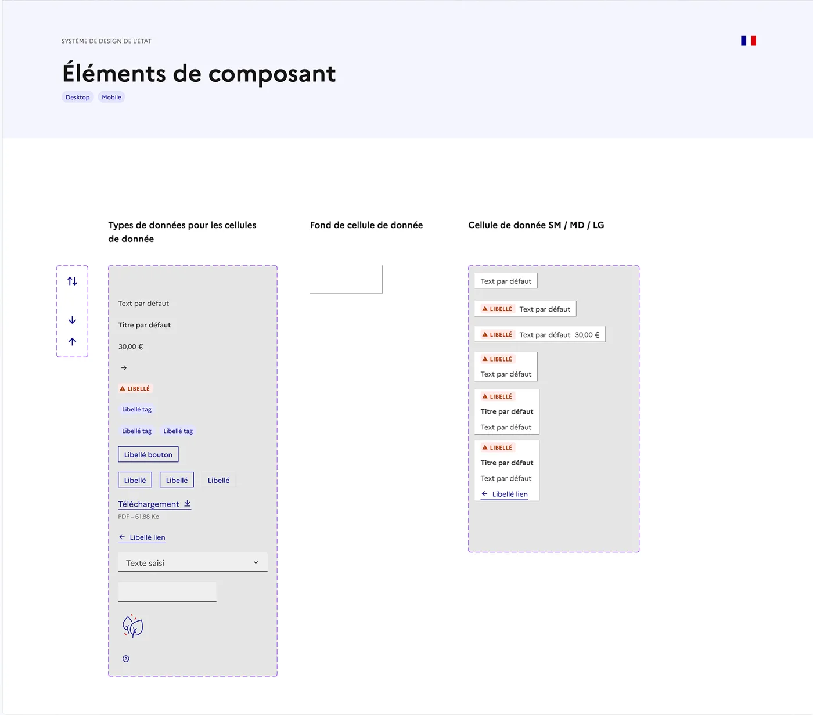
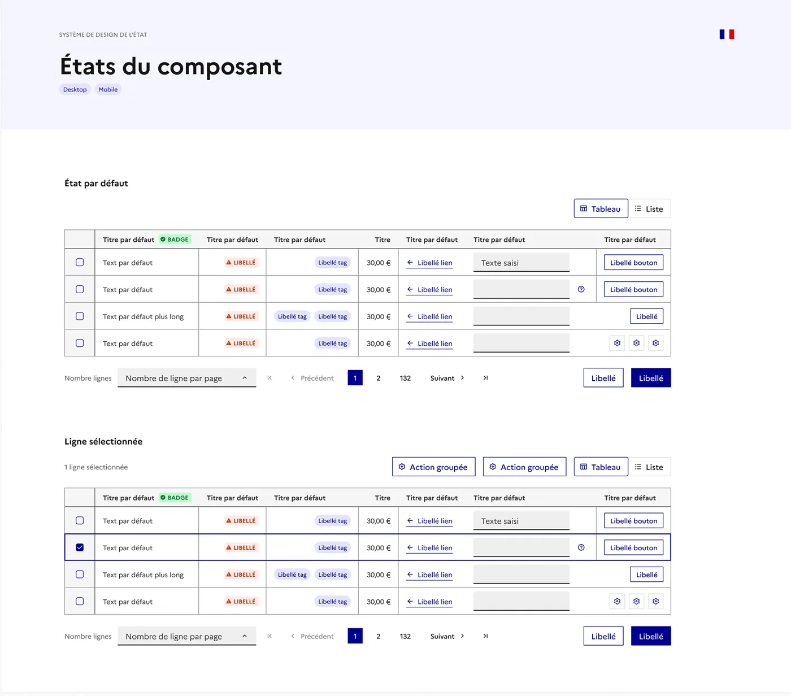
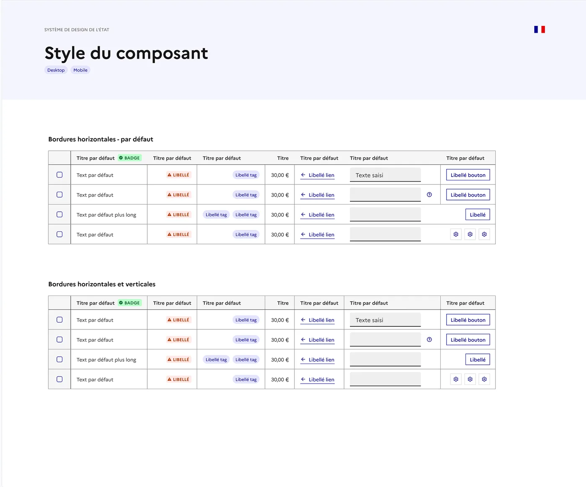
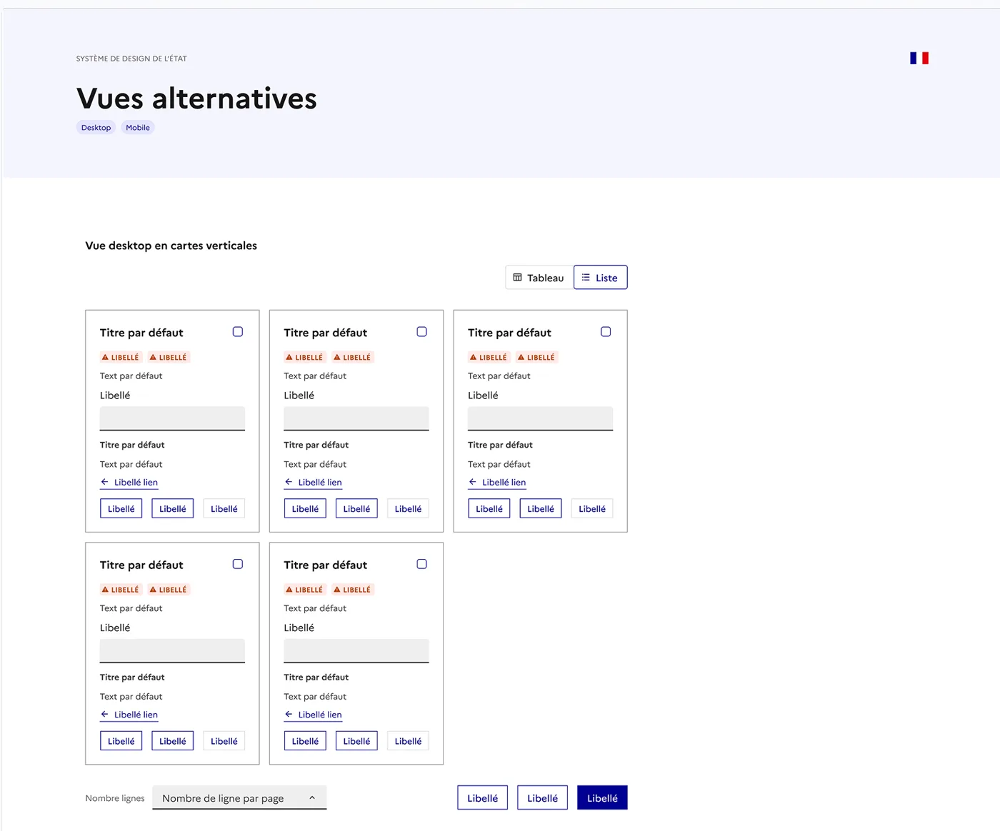

Product designer B2B · Du MVP au produit, design systems AI-readyRendre lisible une information dense, sans sortir du design system de l'État.
Deux ans au Service d'information du Gouvernement (SIG), avec designers, PM, data-analystes et développeurs : j'ai contribué à refondre les pages clés d'info.gouv.fr, de l'audit DSFR et RGAA aux ateliers de cadrage, jusqu'à un composant Tableau adapté du DSFR et documenté pour les développeurs.
Cette page se manipule : choisissez une priorité, parcourez-la au clavier, changez le thème d'affichage.
Titre
Preuve
Action
info.gouv.fr
GOUVERNEMENTinfo.gouv.fr
Baromètre des résultats de l'action publique
Ce qui change pour moi
Atteindre le plein emploi et réindustrialiser le pays
9 politiques prioritaires
Créer des emplois pour notre souveraineté industrielle
Simplifier la vie des entreprises avec la facturation électronique
Favoriser la réussite et l'accès à l'emploi par le lycée professionnel
Atteindre le plein emploi et réindustrialiser le paysBâtir de nouveaux progrès et refonder nos services publicsPlanifier et accélérer la transition écologiqueRenforcer l'ordre républicain et encourager l'engagement
9 politiques prioritaires
Créer des emplois pour notre souveraineté industrielle
Simplifier la vie des entreprises avec la facturation électronique
Favoriser la réussite et l'accès à l'emploi par le lycée professionnel
34 politiques prioritaires
Renforcer l'égalité salariale femme / homme avec l'index Egapro
Simplifier l'accès aux droits des personnes handicapées
Donner accès à la culture à tous les jeunes avec le « Pass culture »
11 politiques prioritaires
Développer l'économie circulaire
Permettre à tous les Français de faire du vélo
Rénover son logement grâce à MaPrimeRénov'
13 politiques prioritaires
Garantir l'accès à la justice grâce à l'aide juridictionnelle
Renforcer la présence des forces de l'ordre dans l'espace public
Renforcer l'efficacité de la procédure d'asile
Reconstitution interactive de la maquette finale du baromètre des Politiques prioritaires, avec ses intitulés et ses exemples de politiques. Ce n'est pas le site en ligne. Chaque bloc se lit dans le même ordre : un titre, une preuve, une action.
Rôle
UX/UI designer, SIG (Services du Premier ministre)
Durée
2 ans
Équipe
Designers, PM, data-analystes et développeurs du SIG
La page Politiques prioritaires, repenséeD'une logique « institution d'abord » à une logique « service d'abord » : la page part de ce qui change pour le citoyen.Voir l'avant et l'après
Un composant Tableau adapté du DSFRPour les résultats du baromètre, documenté en quatre planches : structure, états, style, vues alternatives.Voir le composant
Un audit DSFR et RGAAÉcarts relevés sur les composants, les tailles, les interlignages, les états de focus et de survol, les contrastes ; corrections consignées dans un rapport.Voir le parcours au clavier
La mission
Deux ans, en six temps
Au sein du SIG, avec des designers, des PM, des data-analystes et des développeurs. Chaque temps a nourri le suivant : rien n'a été maquetté avant d'avoir été audité, comparé et cadré avec les équipes.
01AuditerDSFR, heuristiques, parcours à risque
02Comparer6 sites comparés, l'ancien compris
03Cadrer3 ateliers FigJam avec métiers, communication et technique
04StructurerMoins de niveaux, wireframes mobile d'abord
05ConcevoirMaquettes et prototypes conformes au DSFR
06DocumenterBibliothèque Figma et guide pour les développeurs
Le problème
Une vitrine qui parlait de l'État, pas au citoyen
Info.gouv.fr est le point d'entrée des citoyens qui veulent s'informer sur les politiques prioritaires du Gouvernement. L'ancienne page suivait une logique de communication institutionnelle : quatre axes aux titres longs, des chiffres empilés par axe, et des actions noyées dans le texte.
L'information était là. La trouver demandait trop d'efforts.
Le défiConcilier les exigences d'accessibilité réglementaires et une expérience moderne, sans jamais sortir du Système de design de l'État.
info.gouv.fr/politiques-prioritaires


Les maquettes de la page, avant et après la refonte. Elles défilent seules ; survolez ou touchez pour reprendre la main.
Cinq nœuds relevés à l'audit
1Une navigation trop profondeTrop de niveaux avant d'arriver à l'information.
2Un discours de communicationLe contenu parlait de l'institution plutôt que du service rendu.
3Une hiérarchie floueRien ne guidait l'œil vers l'essentiel.
4Des actions noyéesLes boutons se perdaient dans le texte éditorial.
5Une accessibilité à reprendreDes écarts au RGAA et au DSFR : tailles, focus, contrastes.
Et cinq contraintes à tenir
Rester dans le Système de design de l'État (DSFR)
Tenir le RGAA : contrastes, clavier, lecteurs d'écran
Aligner métiers, communication et développement
Penser le téléphone d'abord
Offrir une expérience moderne malgré le cadre
Comparer
Six sites comparés, l'ancien Gouvernement.fr compris
Avant de dessiner, une analyse comparative des sites gouvernementaux européens et nord-américains, l'ancien Gouvernement.fr compris : ce qui marche, ce qui se répète, ce qui manque.
Référence
GOV.UKUne navigation orientée tâche et des messages orientés bénéfice pour l'utilisateur.gov.uk
Référence
Canada.caUne entrée « Comment pouvons-nous vous aider ? » qui mène vite aux services prioritaires.canada.ca
Europe
Union européenneUn design épuré, la recherche en premier, une architecture d'information claire.european-union.europa.eu
Europe
Bundesregierung.deUne structure fédérale complexe à présenter, avec un contenu personnalisé.bundesregierung.de
Portail
Un portail par domainesDes domaines métiers, une iconographie claire, des appels à l'action explicites.
Point de départ
Gouvernement.fr, avantUne communication institutionnelle, centrée sur l'actualité politique.
Institution d'abord
Ce que le Gouvernement veut dire : axes, actualités, communication.
Service d'abord
Ce que le citoyen vient faire : comprendre ce qui change pour lui, et agir.
Le constat clé. Les sites de référence, GOV.UK et Canada.ca en tête, partent de ce que l'utilisateur peut accomplir plutôt que de la communication gouvernementale. C'est ce renversement qui a guidé la refonte.
Cadrer
Trois ateliers pour aligner métiers, communication et technique
Des ateliers FigJam à plusieurs parties prenantes, en design thinking adapté au contexte institutionnel : d'abord ouvrir les pistes, puis converger, avec une priorisation RICE puis MoSCoW. La faisabilité technique était vérifiée en séance, pas après.
Du diagnostic à la décision
Faites glisser, ou utilisez les flèches du clavier.
Diagnostic
Idées
Décision
Atelier 1 · diagnostic
Mettre les irritants sur la table
Les points de friction des utilisateurs
Les contraintes techniques et éditoriales
Les objectifs métiers de chaque direction
Ce qui en sortUne même vision des problèmes, partagée par toutes les équipes.
Atelier 2 · idées
Ouvrir les pistes, vérifier la faisabilité
Des solutions d'expérience : un baromètre simplifié, des boutons clairs
De nouveaux principes d'interaction explorés
La faisabilité technique vérifiée en direct
Ce qui en sortLe baromètre simplifié et des appels à l'action lisibles.
Atelier 3 · décision
Trancher, puis planifier
Les fonctions priorisées en MoSCoW
L'architecture d'information cible
Une feuille de route de déploiement par étapes
Ce qui en sortLa structure de la nouvelle page, prête à maquetter.

Le wireframe brut, exporté tel quel de Figma (frame « Accueil - National ») : la structure décidée en atelier, avant toute couleur.
Structurer
Une page qui répond à une seule question : qu'est-ce qui change pour moi ?
Le sitemap est resserré, la navigation moins profonde, et la page suit l'ordre de lecture du citoyen. Dans chaque bloc, la même hiérarchie : un titre court orienté bénéfice, une preuve, une action.
Se présenter en une phrase. Le baromètre s'ouvre sur sa promesse, puis quatre engagements lisibles d'un coup d'œil, avant le moindre détail.
Des actions regroupées en 4 priorités
Des résultats chiffrés accessibles à tous
Un impact local, dans mon territoire
Des dispositifs pour m'accompagner
Une carte par priorité. Une illustration, un titre, un résumé, les objectifs prioritaires, et un seul bouton : « Consulter la priorité ».
Plein emploi et réindustrialisation
Progrès et services publics
Transition écologique
Ordre républicain et engagement
Ramener l'action publique chez soi. Une carte de France à cliquer pour découvrir les résultats chiffrés des actions de l'État dans sa région et son département.
Carte cliquable
Région
Département
Explorer les données
Montrer, avec une date. Les derniers indicateurs mis à jour, chacun avec sa date, et un accès aux données de sa région ou de son département.
Dernières mises à jour
Date visible sur chaque carte
Filtre par territoire
Explorer les données
Une architecture simplifiéeMoins de niveaux de navigation, un sitemap resserré.
Des messages orientés bénéficesLe citoyen lit ce qui change pour lui, pas un intitulé administratif.
Titre, preuve, actionLa même hiérarchie dans chaque bloc de la page.
Des actions visiblesDes boutons identifiables et accessibles, sortis du texte.
Le téléphone d'abordDes wireframes annotés pensés pour le mobile, puis élargis.
Dans le DSFRComposants et tokens de l'État, adaptés seulement quand le besoin l'exige.
Faites le parcours au clavier
Le RGAA demande que tout se fasse sans souris, avec un repère de focus toujours visible. Les prototypes ont été vérifiés avec les lecteurs d'écran NVDA et VoiceOver. Avancez avec la touche Tab (ou le bouton), puis retirez le focus visible pour voir ce qu'il évite.
RechercherParamètres d'affichage
Politiques prioritairesLe Gouvernement
Atteindre le plein emploi et réindustrialiser le paysConsulter la priorité
Explorer les données
Ce qu'annonce un lecteur d'écranAppuyez sur Tab pour commencer.
Concevoir
Un tableau du DSFR, adapté au baromètre
Pour présenter les résultats du baromètre, j'ai contribué à adapter le composant Tableau du DSFR en composants spécifiques, construits en atomic design et documentés pour les développeurs. Innover, oui, mais sans casser la cohérence du design system de l'État.
Aucune ligne sélectionnée
Exemple du composant, avec trois indicateurs de la maquette finale
Sélection
Indicateur
Territoire
Valeur
Mise à jour
Lien
Nombre d'actes mensuels réalisés en France services
Trois indicateurs tels qu'ils figurent sur la maquette finale. Cochez une ligne, puis passez en liste : les états et la vue en cartes reprennent les planches ci-dessous.

Structure. Les éléments du composant, avec une hiérarchie claire et des espacements calés sur les tokens du DSFR.

États. Défaut, survol, focus, désactivé, ligne sélectionnée : chaque état interactif respecte les contraintes du RGAA.

Style. Des déclinaisons à bordures horizontales ou verticales, une typographie système cohérente.

Vues alternatives. Une vue en cartes verticales pour l'ordinateur et le mobile, pour que les données restent lisibles sur tous les écrans.
Bibliothèque Figma
L'enrichissement d'une bibliothèque déjà en place, des atomes aux gabarits : tokens normalisés (typographie, espacements, couleurs) et règles d'usage par composant, quand et comment, à faire et à éviter.
Documentation développeur
Une participation à la documentation technique : règles de responsive, nomenclature des composants, exemples d'intégration. Des wireframes structurés qui ont facilité le travail de l'équipe de développement.
Accessibilité
Tailles, interlignages, états de focus et de survol, ratios de contraste : les tokens et composants ajustés pour le RGAA, puis vérifiés au clavier et avec NVDA et VoiceOver.
Avant, après
Cinq nœuds, cinq réponses
Chaque problème relevé à l'audit a sa réponse dans la page livrée. Ici, pas de chiffres d'audience : les changements se voient dans les maquettes et sur le site.
01
Une navigation trop profonde
Une architecture simplifiéeUn sitemap resserré, moins de niveaux.
02
Un discours de communication
Des messages orientés bénéfices« Ce qui change pour moi ».
03
Une hiérarchie floue
Titre, preuve, actionLe même ordre dans chaque bloc.
04
Des actions noyées
Un bouton par prioritéIdentifiable et accessible.
05
Des écarts au RGAA et au DSFR
Un rapport d'auditLes écarts et leurs corrections, consignés.
Livrer
Cinq livrables, pour que le travail dure
Au-delà des écrans, des livrables pensés pour que le projet tienne dans le temps, avec les équipes du SIG. Ils sont internes au SIG : cette page en montre des extraits (maquettes, wireframe, planches du composant).
Wireframes annotésDes séries mobile d'abord, annotées sur la hiérarchie de l'information et les comportements.
Maquettes haute fidélitéDans Figma, avec micro-interactions et transitions douces, et des variantes de hero : titre orienté bénéfice, preuve, action.
Bibliothèque DSFRDes atomes aux gabarits, tokens normalisés et règles d'usage par composant.
Documentation développeurRègles de responsive, nomenclature des composants, exemples d'intégration.
Rapport d'audit RGAALes écarts relevés et les corrections appliquées.
En ligne, pour situer le travail
info.gouv.frLe site officiel du Gouvernement, sur lequel j'ai travaillé. La page Politiques prioritaires n'y est plus sous cette forme : en novembre 2026, son ancienne adresse mène au « Suivi des engagements du Gouvernement ».
Le composant Tableau du DSFRLa documentation officielle du composant d'origine, avant son adaptation au baromètre.
Retenir
Ce que ce projet m'a appris
L'accessibilité, une contrainte créativeLe RGAA n'est pas un frein : les exigences de contraste et de hiérarchie m'ont poussé vers des choix plus nets.
Parler de bénéfices, pas d'institutionsRemplacer les titres institutionnels par ce qui change concrètement pour le citoyen change toute la lecture de la page.
Cadrer à plusieurs, et tôtLes ateliers avec métiers, communication et technique ont permis d'aligner tôt toutes les parties prenantes et d'éviter des allers-retours en fin de projet.
Le design system, un investissementNormaliser autour du DSFR et enrichir la bibliothèque Figma donne aux équipes une base commune pour les pages suivantes.
Dans un service public, chaque décision de design touche directement l'accès aux droits et aux services. Cette responsabilité demande une rigueur qui va bien au-delà de l'esthétique.
En questions
Questions fréquentes
Quel était mon rôle ?
UX/UI designer au Service d'information du Gouvernement (Services du Premier ministre) pendant deux ans, dans une équipe de designers, de PM, de data-analystes et de développeurs. J'ai contribué à la refonte avec l'équipe design du SIG : audit, ateliers, wireframes, maquettes, prototypes et documentation.
Qu'est-ce que le DSFR ?
Le Système de design de l'État : les composants, les tokens et les règles communs aux sites publics. J'ai travaillé dans ce cadre et contribué à adapter son composant Tableau pour le baromètre des Politiques prioritaires.
Comment l'accessibilité a-t-elle été traitée ?
Par un audit des écarts (tailles, interlignages, états de focus et de survol, contrastes), des corrections consignées dans un rapport d'audit RGAA, et des tests des prototypes avec les lecteurs d'écran NVDA et VoiceOver.
Pourquoi aucun chiffre d'audience ?
Je n'ai pas d'export des données de mesure du site. Plutôt que d'avancer des chiffres que je ne peux pas sourcer, cette page montre le travail livré, vérifiable dans les maquettes et en ligne.
Où voir le travail ?
Sur info.gouv.fr. L'adresse de l'ancienne page Politiques prioritaires mène aujourd'hui au « Suivi des engagements du Gouvernement » ; les maquettes de la refonte sont présentées sur cette page.
Un produit B2B dense à rendre clair, dans votre design system ?
Ce que j'ai fait au SIG, je le fais pour vos équipes produit : audit d'accessibilité et de cohérence, ateliers de cadrage avec métiers et technique, composants documentés pour les développeurs, dans votre design system existant ou à construire. Du MVP au produit, en freelance, en régie ou sur une mission ciblée.
Paramètres d'affichage : thème clairParamètres d'affichage : thème sombreAtelier 1, diagnosticAtelier 2, idéesAtelier 3, décisionAppuyez sur Tab pour commencer.Où est le focus ? Sans repère visible, impossible de le savoir à l'écran.Champ de recherche, Rechercher sur le siteParamètres d'affichage, boutonPolitiques prioritaires, menu, réduitConsulter la priorité, Atteindre le plein emploi et réindustrialiser le pays, boutonExplorer les données, lienAucune ligne sélectionnée1 ligne sélectionnée{n} lignes sélectionnéesAction groupée appliquée à {n} ligne(s)